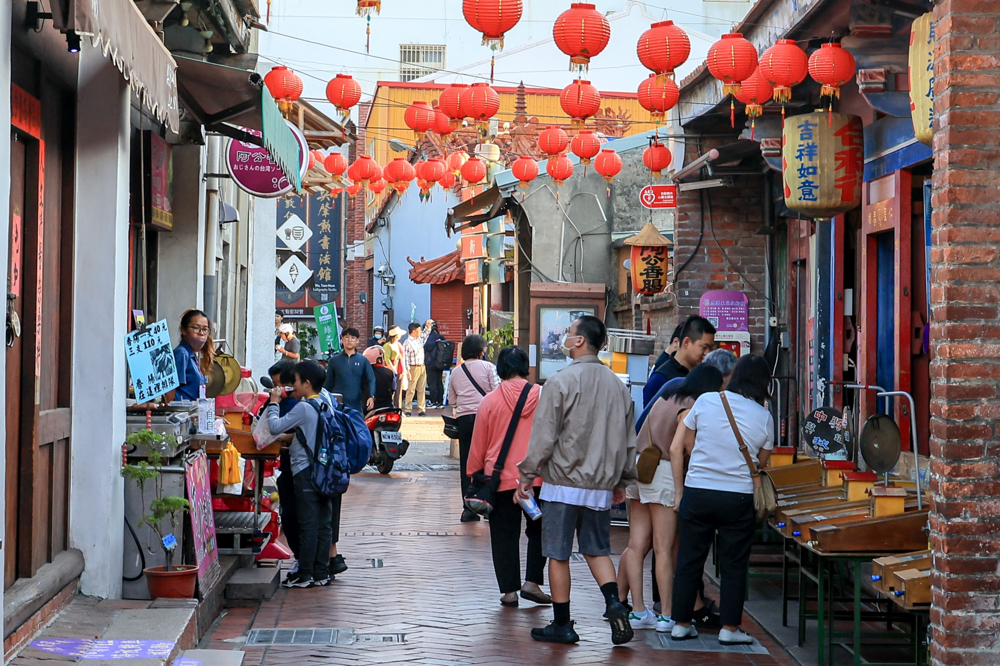

| TUGAS IPS: Wawancara Destinasi Wisata Destinasi: Lukang Old Street - Kondisi: Ramai dengan banyak produk unik. - Cara merawat: Menjaga lingkungan sekitar dengan baik. - Tata kota: Sedikit berantakan dengan banyak rumah yang tidak dibangun dengan rapih (tidak sebaris). - Interaksi antar-generasi: Penuh hormat. Bisnis mayoritas diwariskan dari generasi ke generasi. Lalu juga ada banyak festival yang mempertemukan orang antar generasi & memperkuat ikatan. - Kepercayaan / keyakinan masyarakat: Buddhisme & Taoisme.  |